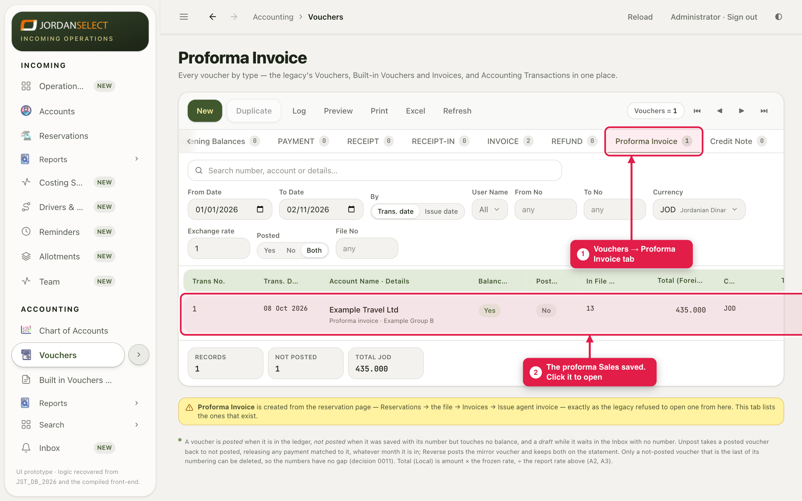
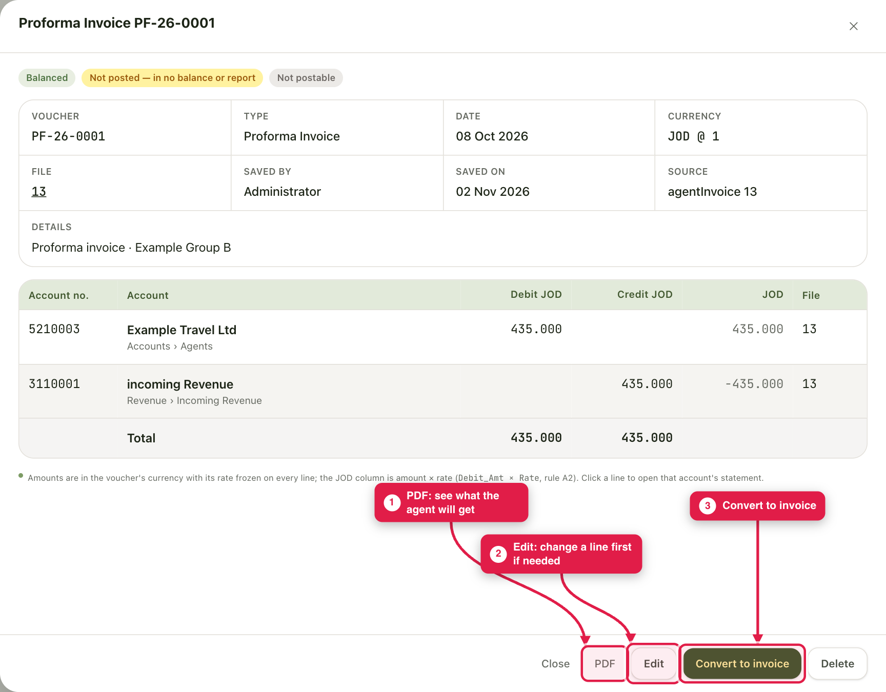
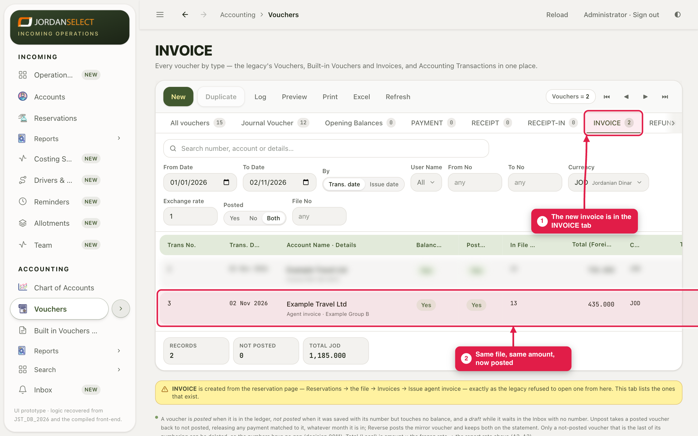
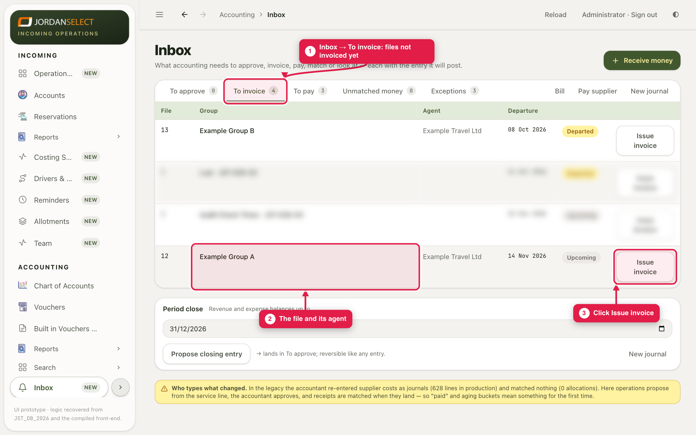
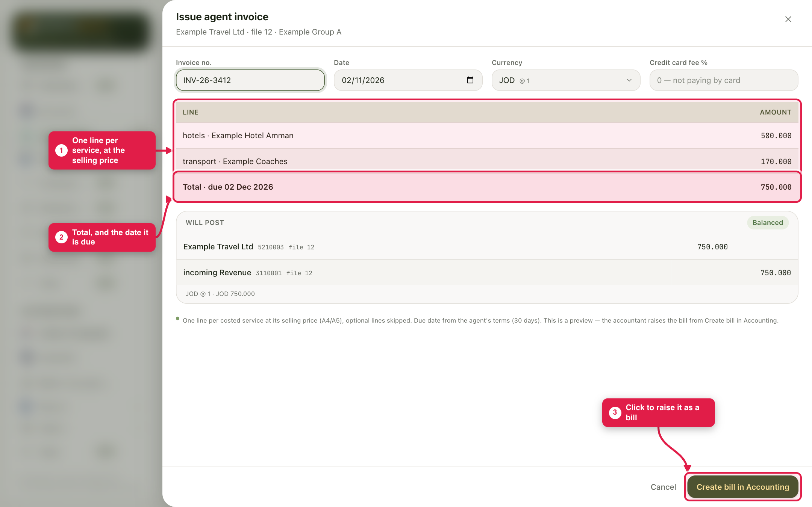
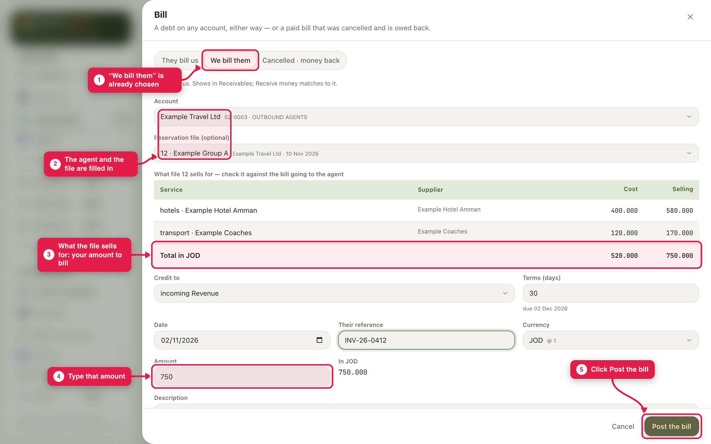

Turn what a file sells into a posted invoice the agent owes, with or without a proforma from Sales.
WhoAccountants
WhereAccounting → Vouchers → Proforma Invoice, or Accounting → Inbox → To invoice
Takes2 to 3 minutes
You needThe file number and what the agent was quoted
Which way?
The situation
Use
Sales already made a proforma
Section 1: convert the proforma. This is the usual way.
There is no proforma
Section 2: invoice from the Inbox.
1. Convert a proforma into an invoice
Sales create a proforma on the file and send it to the agent. It has a number (PF-…) but is not posted: it is in no balance. When the agent confirms, you turn it into the real invoice.
1
Open Accounting → Vouchers and click the Proforma Invoice tab. Click the proforma to open it.

Vouchers → Proforma Invoice. The file number is in the In File column.
2
Check the lines and the total. PDF shows what the agent will receive. If a line is wrong, click Edit and fix it first. When it is right, click Convert to invoice.

An open proforma. Badges at the top say it is not posted yet.
Convert happens at onceThere is no “Are you sure?” box. The invoice is posted as soon as you click. Check the proforma first.
3
The system says, for example, “PF-26-0001 converted to INV-26-0003, posted”. The new invoice is in the INVOICE tab, for the same file and amount. The proforma stays in its tab, marked as converted.

The posted invoice in the INVOICE tab.
2. Invoice a file that has no proforma
Example: file 12, Example Group A, sells for 750.000 JOD to Example Travel Ltd.
1
Open Accounting → Inbox and click To invoice. It lists the files that have not been invoiced yet. Find the file and click Issue invoice.

Inbox → To invoice.
2
A preview opens: one line per service, at the selling price, with the total and the date it is due. Check it, then click Create bill in Accounting.

The invoice preview. Nothing is posted yet.
3
The Bill form opens with We bill them chosen and the agent and file filled in. Total in JOD shows what the file sells for. Type that amount, add your invoice number in Their reference, and click Post the bill.

The Bill form, ready to post.
3. Check your work
The file has gone from To invoice.
The agent’s Statement shows the invoice as Open until the money comes in (guide 04).
A mistake? Fix the invoice as in guide 01.
Questions? Ask the finance manager. · Last checked: ____ · Screens shown are from a test copy of the CRM with made-up data.